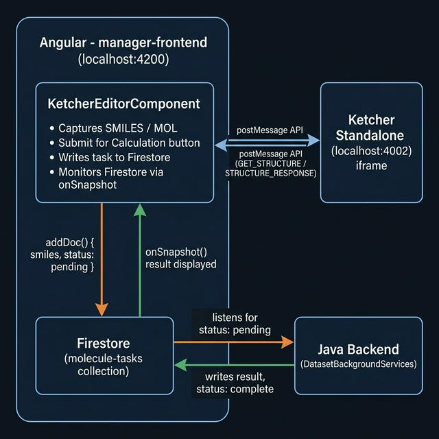

Running Application
The Ketcher editor (left panel) is embedded in the Angular manager-frontend via an <iframe>. The right control panel captures the drawn structure, displays its SMILES representation, and submits it as a Firestore task for backend processing.

Architecture
The integration follows a clean separation of concerns — Ketcher handles molecule drawing while Angular owns all communication, workflow logic, and UI context.

Design Decision: iframe + postMessage
Rather than embedding ketcher-react as an npm dependency (which would require bridging React into Angular), the Ketcher standalone server is embedded as an <iframe>. All communication goes through the browser's postMessage API — a standard cross-origin messaging mechanism. This approach:
- Adds zero React dependencies to the Angular app
- Works across origins (different ports in dev, different domains in prod)
- Decouples the editor — it can be swapped for any other tool later
postMessage API Protocol
A custom message bridge was added to Ketcher's App.tsx inside the onInit callback. This allows the Angular parent to request structure data without ever accessing the cross-origin contentWindow directly.
| Direction | Event Type | Payload |
|---|---|---|
| Angular → Ketcher | GET_STRUCTURE | none |
| Ketcher → Angular | STRUCTURE_RESPONSE | { smiles, molfile } |
| Angular → Ketcher | SET_STRUCTURE | { smiles?, molfile? } |
| Ketcher → Angular | init | fired when Ketcher is ready |
window.addEventListener('message', async (event) => {
if (event.data?.eventType === 'GET_STRUCTURE') {
const [smiles, molfile] = await Promise.all([
ketcher.getSmiles(),
ketcher.getMolfile(),
]);
safePostMessage({ eventType: 'STRUCTURE_RESPONSE', smiles, molfile });
}
if (event.data?.eventType === 'SET_STRUCTURE') {
await ketcher.setMolecule(
event.data.molfile || event.data.smiles || '',
);
}
});safePostMessage.ts was updated to use '*' as the target origin when the parent window's origin cannot be read (cross-origin restriction). The original code incorrectly fell back to Ketcher's own origin, causing "target origin does not match" errors.
Firestore Workflow Integration
Once a structure is captured, KetcherEditorComponent follows the same Firestore-based task pattern as Cloud Workflow callbacks — write a document, then watch it with onSnapshot().
Firestore Document Schema — molecule-tasks/{id}
{
"smiles": "C1CCCCC1",
"molfile": "...",
"status": "pending | processing | complete | error",
"type": "molecule-calculation",
"createdAt": "<timestamp>",
"result": "<populated by backend>",
"error": "<populated on failure>"
}// 1. Write the task document
const docRef = await addDoc(collection(firestore, 'molecule-tasks'), {
smiles, molfile, status: 'pending', type: taskType, createdAt: new Date()
});
// 2. Monitor for backend result (same pattern as workflow callbacks)
onSnapshot(doc(firestore, 'molecule-tasks', docRef.id), (snapshot) => {
const data = snapshot.data();
if (data.status === 'complete') displayResult(data.result);
if (data.status === 'error') displayError(data.error);
});Bonus: Custom Radical Toolbar Button
As part of this implementation, a custom "Mark as Radical" button was added to Ketcher's toolbar — implemented exactly like the existing charge buttons.
Key insight — Enum value mapping
Ketcher's schema maps radical values non-intuitively:
| Value | Meaning |
|---|---|
0 | No radical |
2 | Monoradical ← correct value for single dot |
1 | Diradical singlet (two dots — the wrong default) |
3 | Diradical triplet |
Setting radical: 2 gives one dot without removing bonds.
Files added to packages/ketcher-react/src/:
assets/icons/files/radical.svg— new iconscript/editor/tool/radical.ts—RadicalToolclassscript/editor/tool/index.ts— registered toolscript/ui/action/tools.js— toolbar actionscript/ui/views/toolbars/LeftToolbar/LeftToolbar.tsx— button placement
Running Locally
Terminal 1 — Ketcher Standalone (port 4002)
cd ketcher
# First time or after source changes:
npm run build:example:standalone
# Then serve:
npm run serve:standaloneTerminal 2 — Angular Frontend (port 4200)
cd manager-frontend
ng serveNavigate to: Home → Tasks → Molecule Editor
or directly: http://localhost:4200/molecule-editor
molecule-tasks collection requires explicit write permissions for authenticated users. Add the following rule in the Firebase Console → Firestore Database → Rules:match /molecule-tasks/{id} { allow create, read, update: if request.auth != null; }